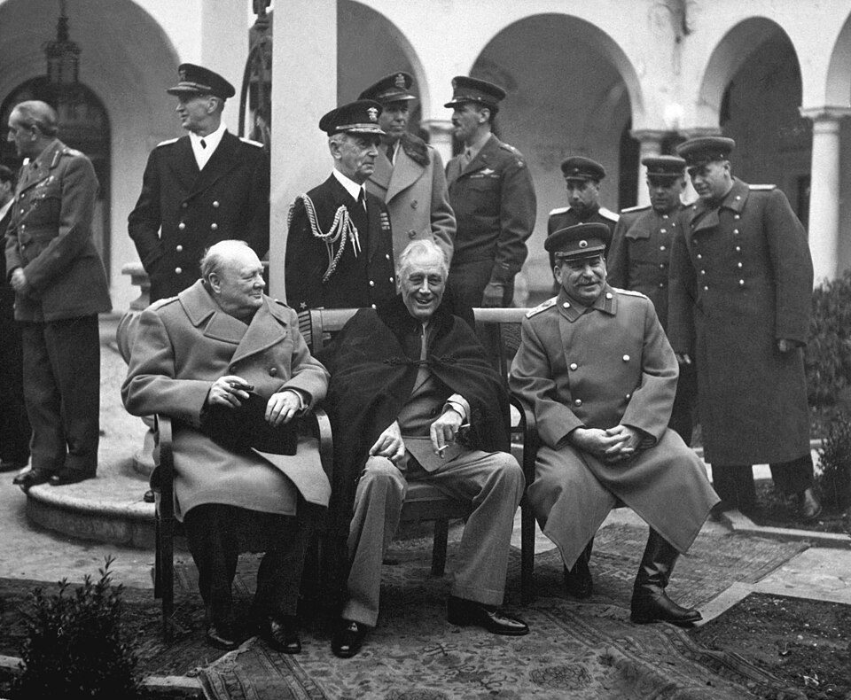
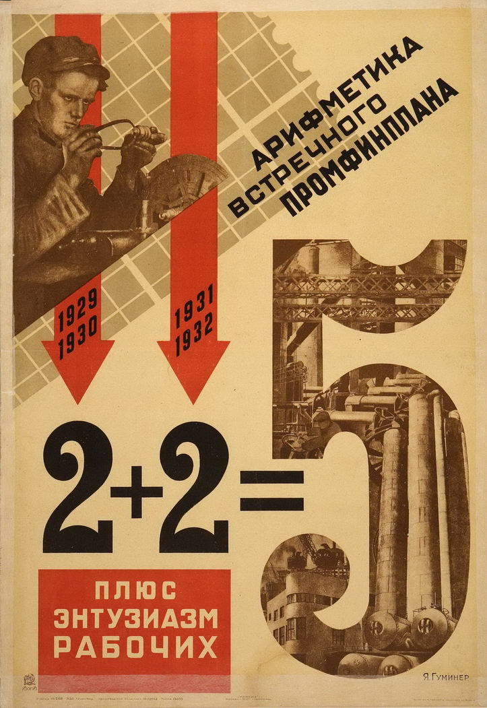
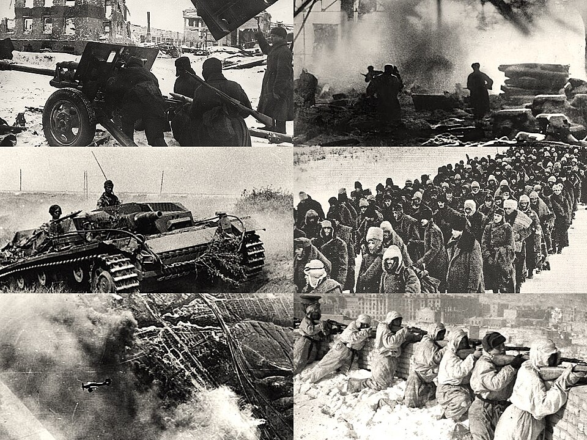

⏱️ 10초 카드 · 소련·냉전 (1878~1953)
철권 통치대숙청2차대전 승전한국전쟁의 배후
여는 질문 — 직접 싸우지 않고 전쟁을 움직인 '배후'에게도 책임이 있을까?
이름
한국어스탈린
원어Иосиф Сталин
실제 발음이오시프 스탈린
로마자Iosif Stalin
영어권Joseph Stalin
왜 이 사람인가
전쟁 영웅이자 수백만을 희생시킨 독재자 — 같은 사람 안의 빛과 가장 짙은 그림자를 보여 줘요. '강한 나라'가 곧 '좋은 나라'는 아니라는 것, 그리고 한국전쟁을 뒤에서 움직인 '배후'의 책임을 묻게 하는 인물이에요.
생애
소련(지금의 러시아 등)을 약 30년간 절대 권력으로 다스린 지도자예요. 나라를 강한 공업국으로 키웠고, 2차 세계대전에서 독일을 물리치는 데 큰 역할을 했어요.
하지만 그 과정에서 자신에게 반대하는 수많은 사람을 가두고 처형했고(대숙청), 강제 정책으로 굶어 죽은 사람도 아주 많았어요.
한국전쟁 때는 김일성의 남침 계획을 승인하고 무기를 대 준 '배후'였어요. 직접 싸우진 않으면서 전쟁의 큰 그림을 움직였죠.
자료로 보기 — 유묵·사진



남긴 말
“한 사람의 죽음은 비극이지만, 백만 명의 죽음은 통계일 뿐이다.”
그에게 흔히 전해지는 말이에요(실제로 했는지는 논란). 진위와 별개로, 수많은 목숨을 숫자로만 본 그의 통치를 사람들이 어떻게 기억하는지를 보여 주죠. · 출처: 스탈린에게 전해지는 말(진위 논란)
“간부가 모든 것을 결정한다.”
사람을 '쓰임'으로 보고 충성스러운 관료로 나라를 장악한 그의 통치 방식을 드러내는, 실제 연설의 한 구절이에요. · 출처: 스탈린 연설(1935)
연표
- 1878출생
- 1920s~소련 최고 권력 장악
- 1930s대숙청
- 19452차대전 승전
- 1950한국전쟁 남침 승인·지원
- 1953사망
변방의 혁명가에서 제국의 일인자로
제국의 변방에서 태어난 사람이 거대한 소련을 손에 쥐기까지, 그리고 전쟁의 운명을 가른 자리들이에요.
현재 지도 위 표시예요. 그가 움직인 결정들은 소련 국경을 넘어, 멀리 한반도의 운명에까지 닿았어요.
빛과 그림자전쟁 영웅이자 수백만을 희생시킨 독재자 — 같은 사람 안의 빛과 짙은 그림자를 가장 무겁게 보여줘요. '강한 나라'가 '좋은 나라'와 같은 말은 아니에요.
더 깊이 (고등·일반)
강철의 사나이
'스탈린'은 본명이 아니라 '강철의 사나이'라는 뜻의 별명이에요. 가난한 집안에서 태어난 그는 혁명가가 되었고, 레닌이 죽은 뒤 권력 다툼에서 이겨 소련의 일인자가 됐죠.
공업화 — 강한 나라의 대가
그는 농업국이던 소련을 빠르게 공업국으로 키웠어요. 하지만 그 과정에서 강제된 정책으로 우크라이나 등에서 수백만 명이 굶어 죽는 끔찍한 기근이 일어났죠.
대숙청
1930년대, 그는 자신에게 위협이 될 만한 사람들을 닥치는 대로 가두고 처형했어요(대숙청). 동료 혁명가, 군 장교, 평범한 시민까지 — 의심만으로 수많은 사람이 사라졌죠.
2차대전의 승전
독일이 소련을 침공하자, 그는 엄청난 희생을 치르며 끝내 독일을 물리쳤어요. 스탈린그라드 전투는 전쟁의 흐름을 바꾼 분수령이었고, 이 승리로 그는 '전쟁 영웅'으로도 불렸죠.
한국전쟁의 배후
전쟁 뒤 그는 미국과 맞서는 냉전의 한 축이 됐어요. 1950년에는 김일성의 남침 계획을 승인하고 무기를 대 줬죠 — 직접 싸우진 않으면서 전쟁의 큰 그림을 움직인 '배후'였어요.
사람의 그물 — 함께 읽을 인물
이 인물이 나오는 이야기
더 공부하기 — 여기서 출발하세요
📚 책으로
- 스탈린 (전기) ↗혁명가에서 독재자로 — 그 변신의 기록.
- 피의 기록: 20세기 전체주의 ↗스탈린·히틀러 시대의 비극을 함께 보기.
📜 1차 사료
- 이오시프 스탈린 (브리태니커) ↗생애와 통치를 정리한 신뢰 자료.
🎬 영상으로
- 다큐 — 스탈린: 역사상 가장 두려운 독재자 ↗ · The People Profiles혁명가에서 독재자로 — 그의 통치를 다룬 영어 다큐멘터리.
📍 가 볼 곳
- 고리 (조지아)그가 태어난 도시 — 한때 거대한 동상이 있었어요.
- 볼고그라드(옛 스탈린그라드)2차대전의 분수령이 된 전투의 도시.